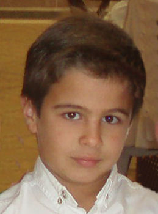

Manuel García Pérez
Manuel García Pérez 

This page is within a frameset. View the entire genealogy report of García Pérez families, or surname index of García Pérez pedigrees or report summary of García Pérez heritage from "Árbol Genealógico de Manolo y Amalia".
Make a family tree.
© 2006 GenoPro Inc. All Rights Reserved.